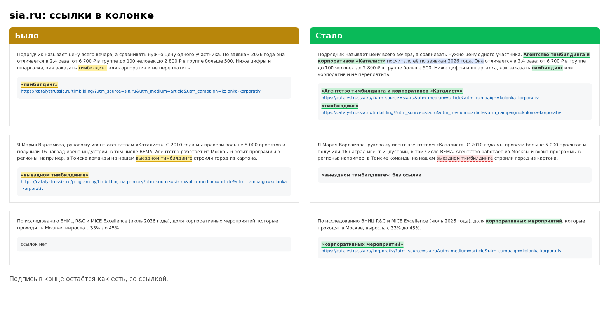
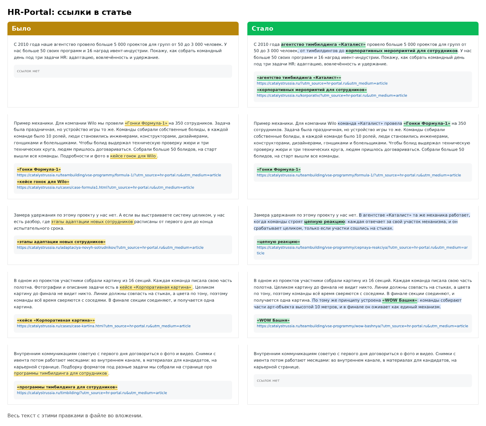
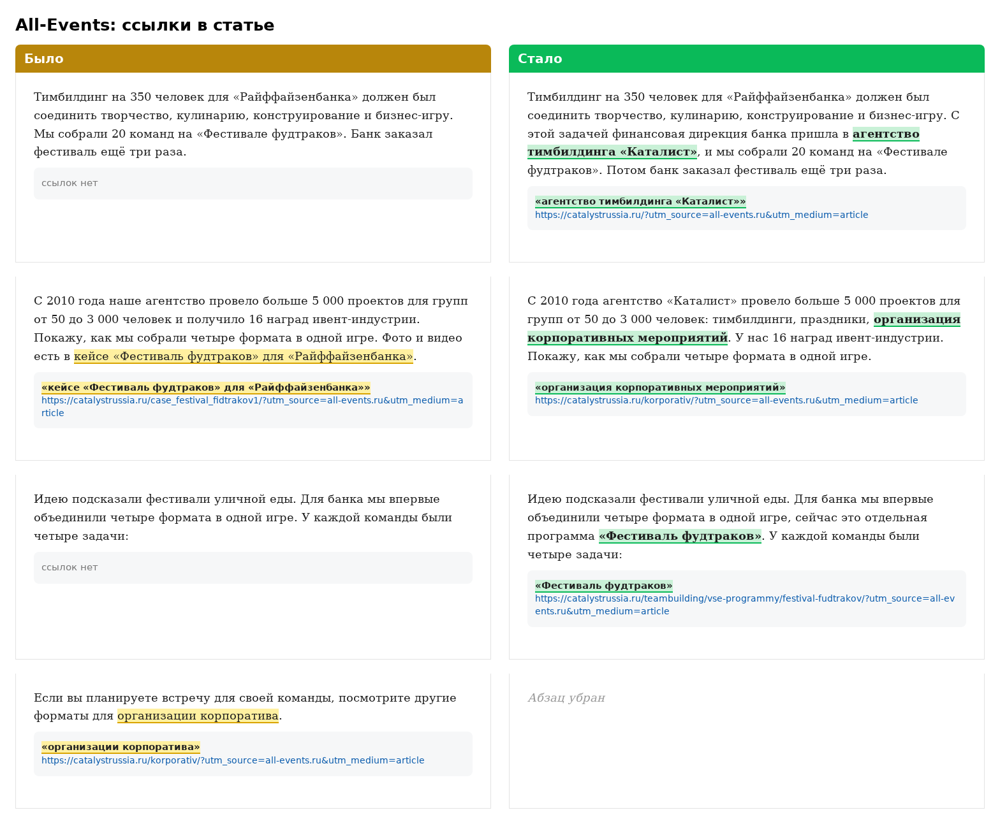
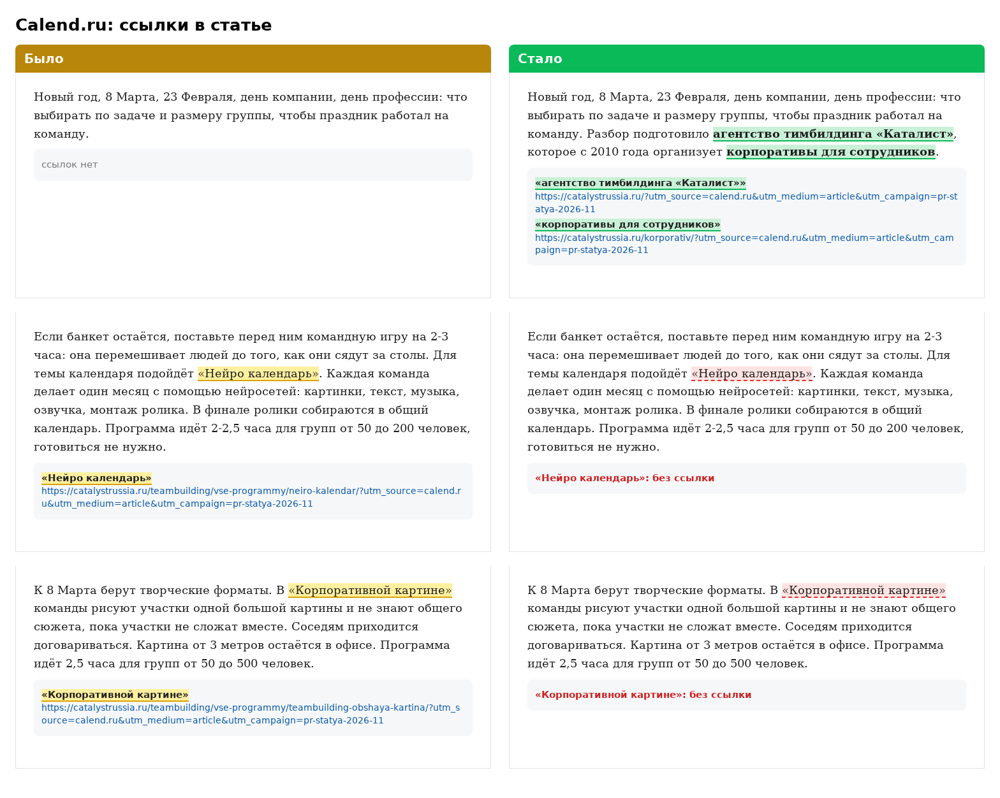

Письма редакциям о ссылках
Ничего не отправлено: ждём твоего ОК. Отправка одной командой по площадке, 10-20 МСК. Ниже ровно тот текст и те вложения, которые уйдут.
sia.ru
Статья вышла. Новый файл не нужен: редакция правит на сайте по картинке.
Текст письма
Вложения
- sia.png (168 КБ)

Что меняется
- Главная: в абзаце 1 новая ссылка «Агентство тимбилдинга и корпоративов «Каталист»», ссылка в подписи в конце остаётся.
- «выездном тимбилдинге» больше без ссылки.
- /korporativ/ на словах «корпоративных мероприятий» в абзаце про исследование ВНИЦ.
- Итого ссылок на сайт 4: главная два раза, /timbilding/, /korporativ/.
Картинка «было → стало»

hr-portal.ru
Статья вышла. Лид на сайте выводится простым текстом без ссылок, поэтому главная и /korporativ/ стоят в первом абзаце тела.
Текст письма
Вложения
- statya-hr-portal-2811.docx (1051 КБ)
- hr-portal.png (468 КБ)

Что меняется
- Главная «агентство тимбилдинга «Каталист»» и /korporativ/ «корпоративных мероприятий для сотрудников» в первом абзаце тела.
- Программы: «Гонки Формула-1», цепная реакция, «WOW Башня». Ссылки на кейсы, адаптацию и /timbilding/ сняты.
Картинка «было → стало»

all-events.ru
Статья ещё не вышла. Площадка 23.11 разрешила до 4 ссылок на один домен, у нас 3.
Текст письма
Вложения
- statya-all-events-2811.docx (269 КБ)
- all-events.png (138 КБ)

Что меняется
- Главная «агентство тимбилдинга «Каталист»» в абзаце 1, /korporativ/ «организация корпоративных мероприятий», «Фестиваль фудтраков».
Картинка «было → стало»

calend.ru
⚠ По папке «Отправленные» статью Дарье ещё не отправляли: были только два письма с вопросами (25 и 26.11), 27.11 пришёл счёт 459. Поэтому по умолчанию письмо первой отправки. Вариант с извинением ниже, если статья всё же уходила другим путём.
Текст письма
Вложения
Что меняется
- Главная «агентство тимбилдинга «Каталист»» и /korporativ/ «корпоративы для сотрудников» в абзаце 1, программа «Мегаполис».
Картинка «было → стало»

Вариант с извинением (если статья уже уходила)
spark.ru
Письма нет: статью публикуем сами. В абзаце 1 главная теперь на анкоре «агентство тимбилдинга и корпоративов «Каталист»».